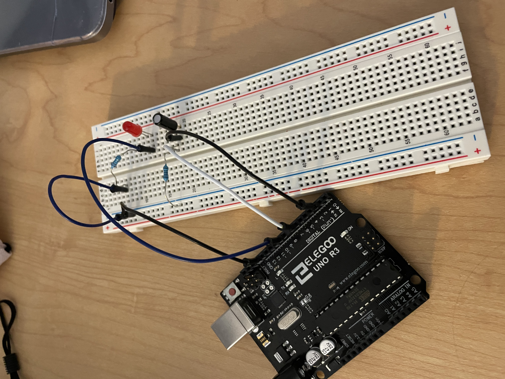

Here is my fade circuit in action!

For this assignment I utilized digitalWrite, analogWrite, and digitalRead to create an LED that fades on if the breadboard is upright, and fades off if the breadbord is upside down.
For this assignment, I wanted to get the LED to fade on whenever the tilt switch was upright, and fade off when the tilt switch was upside down. I utilized digitalWrite, analogWrite, digitalRead, to read the tilt switch status and fade the LED according to its status.
Here is the schematic for my fade setup. I used one LED and a tilt switch. To figure out what resistor to use for the LED I used Ohm's law to calculate the resistance needed. For the red LED I calculated that the resistance needed was 160 ohms. I replaced the 160 ohm resistor with a 220 ohm resistor, due to what I had available. I had a hard time finding what resistor I should use for the tilt switch, so I looked at a couple of data sheets and approximated that a 1K ohm resistor would be adequate.
Here is a photo of what my circuit setup looks like.
Here is my fade circuit in action!